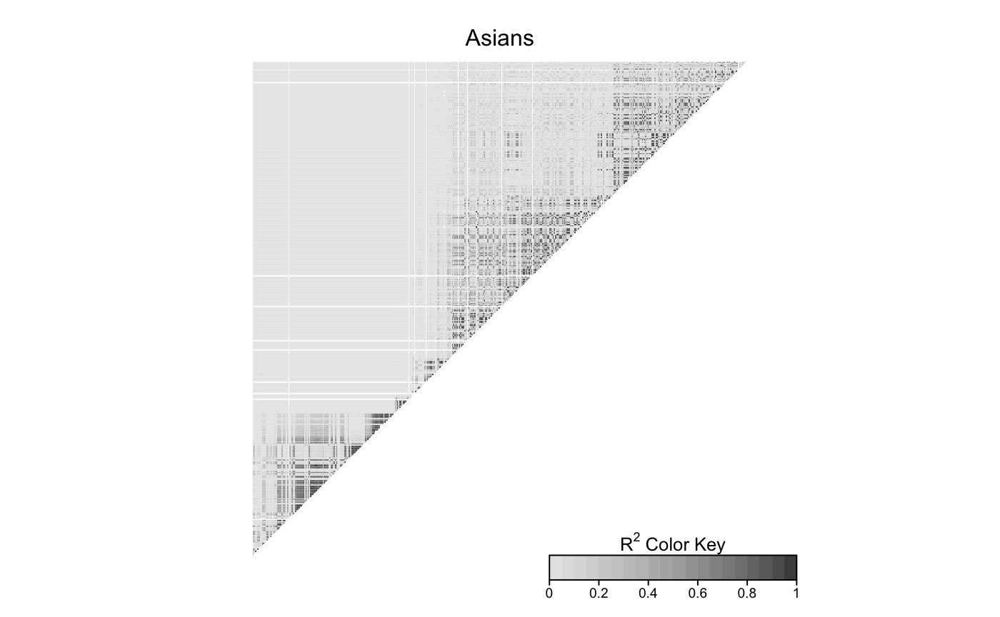

vcfOnLDheatmap.RmdVCF (Variant Call Format) is a text file format. It contains meta-information lines, a header line, and then data lines each containing information about a position in the genome. There is an example how to do draw LDheatmap from data in VCF format
snp_in_vcf.vcf is a vcf datafile contains common SNPs (SNPs with frequency 5% or more in the world-wide population) in the MLLT3 gene. We are going to draw the LDheatmap based on European desent and Asian descent.
#read in the vcf data file
require(vcfR)
#> Loading required package: vcfR
#> Warning: package 'vcfR' was built under R version 3.4.4
#>
#> ***** *** vcfR *** *****
#> This is vcfR 1.8.0
#> browseVignettes('vcfR') # Documentation
#> citation('vcfR') # Citation
#> ***** ***** ***** *****
snp <- read.vcfR("snp_in_vcf.vcf")
#> Scanning file to determine attributes.
#> File attributes:
#> meta lines: 252
#> header_line: 253
#> variant count: 432
#> column count: 2513
#>
Meta line 252 read in.
#> All meta lines processed.
#> gt matrix initialized.
#> Character matrix gt created.
#> Character matrix gt rows: 432
#> Character matrix gt cols: 2513
#> skip: 0
#> nrows: 432
#> row_num: 0
#>
Processed variant: 432
#> All variants processed1KG_sample_info.csv is the data file which contain the information about the sample population and corresponding super population code
#super population for EUR & EAS
#Get the corresponding population code for EUR & EAS
sample_info <- read.csv("1KG_sample_info.csv")
eur <- sample_info[sample_info$Population %in% c("CEU","TSI","FIN","GBR","IBS"),-c(2,4)]
eas <- sample_info[sample_info$Population %in% c("CHB","JPT","CHS","CDX","KHV"),-c(2,4)]
#all column value from EUR/EAS and first FORMAT column
eur_gt <- snp@gt[,colnames(snp@gt) %in% eur[,1]]
eas_gt <- snp@gt[,colnames(snp@gt) %in% eas[,1]]
eur_snpMat <- t(eur_gt)
eas_snpMat <- t(eas_gt)Convert the matrix of genotypes to a numeric matrix in which genotypes are coded as 0, 1 or 2 copies of the minor allele.
#define a function to convert the value into 0,1,2
convertToNumeric <- function(x){
gdat <- matrix(NA,nrow = nrow(x), ncol = ncol(x))
for (m in 1:nrow(x)){
for (n in 1:ncol(x)){
a <-as.numeric(unlist(strsplit(x[m,n], "|"))[1])
b <- as.numeric(unlist(strsplit(x[m,n], "|"))[3])
gdat[m,n] <- a+b
}
}
rownames(gdat) <- rownames(x)
colnames(gdat) <- colnames(x)
return(gdat)
}
#convert to snpMatrix - EUR
gdat_eur <- convertToNumeric(eur_snpMat)
#load the snp_id_dist.csv, which contains the SNPs id and distance
info <- read.csv("snp_id_dist.csv")
snpNames <- info$id
colnames(gdat_eur) <- snpNames
require(snpStats)
#> Loading required package: snpStats
#> Loading required package: survival
#> Warning: package 'survival' was built under R version 3.4.4
#> Loading required package: Matrix
#> Warning: package 'Matrix' was built under R version 3.4.4
library(LDheatmap)
#> Warning: package 'LDheatmap' was built under R version 3.4.4
gdat_eur<-as(gdat_eur,"SnpMatrix")
#> Warning in asMethod(object): values other than 0, 1 or 2 set to NA
LDheatmap(gdat_eur,info$filt_snpDist,title='Europeans',add.map=FALSE)
#convert to snpMatrix - EAS
gdat_eas <- convertToNumeric(eas_snpMat)
colnames(gdat_eas) <- snpNames
gdat_eas<-as(gdat_eas,"SnpMatrix")
#> Warning in asMethod(object): values other than 0, 1 or 2 set to NA
LDheatmap(gdat_eas,info$filt_snpDist,title='Asians',add.map=FALSE)